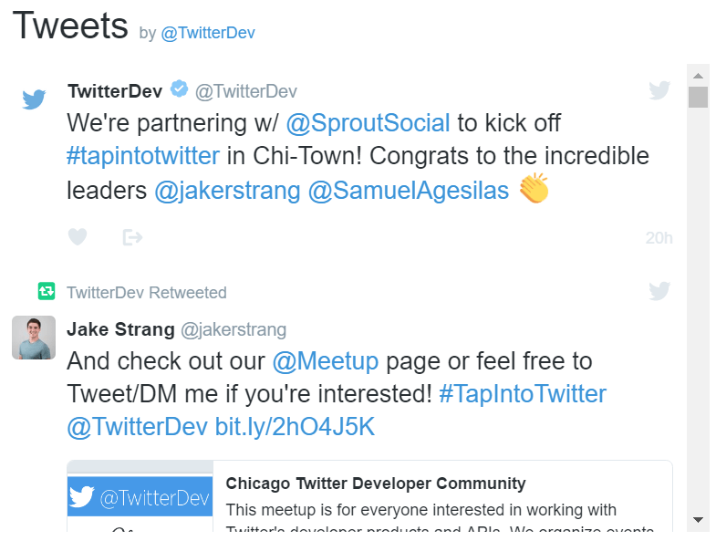
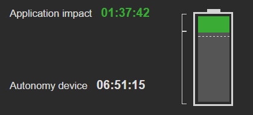
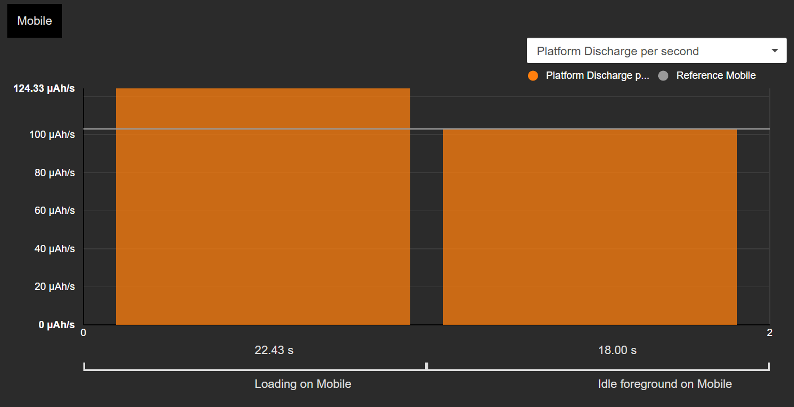
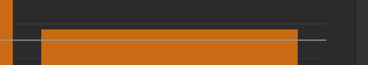
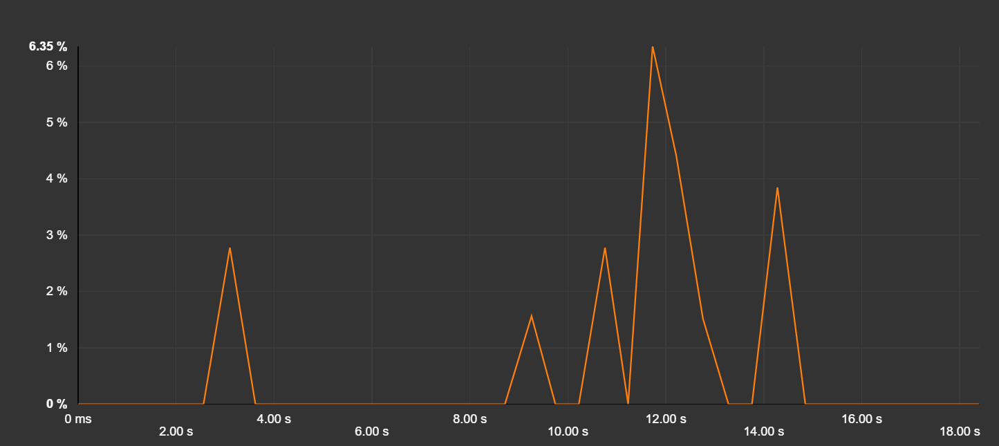
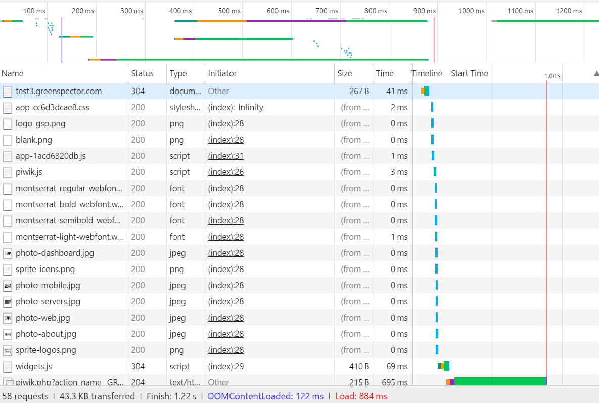
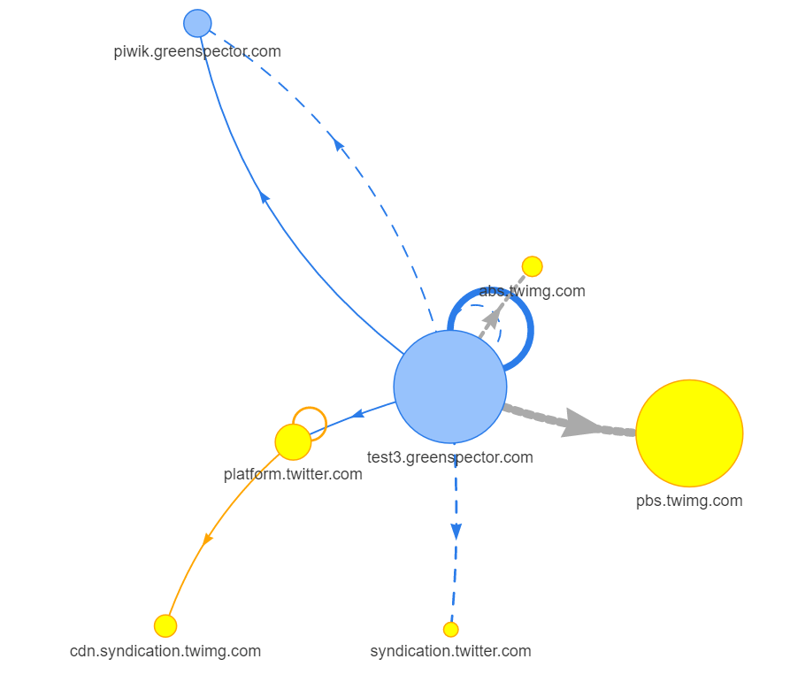
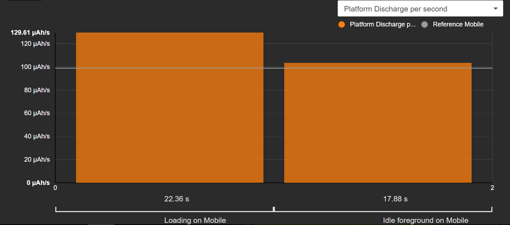
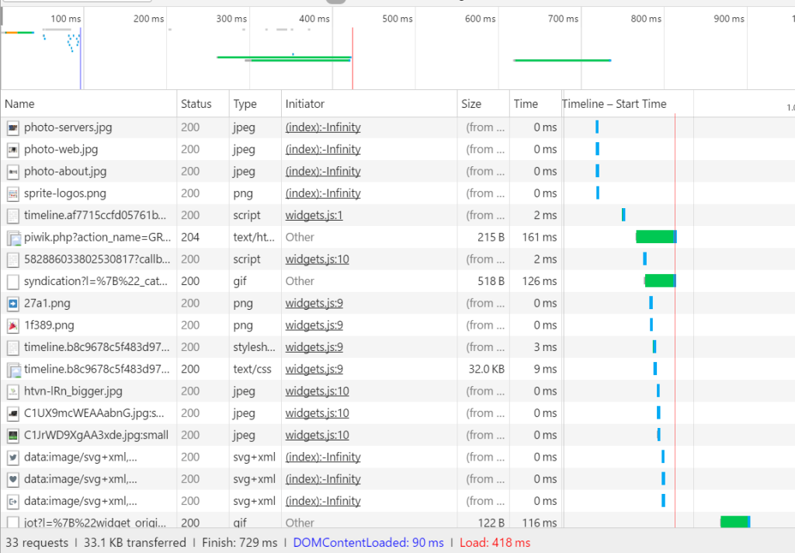
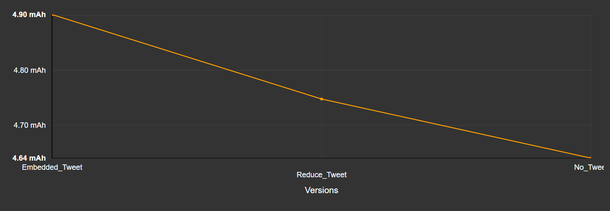

Web developers know that third-party components can have a negative impact on the performance of web sites. It’s been the case for years. In 2010, Steve Souders wrote a blog post about this issue, mentioning third party components such as Twitter’s or Facebook’s. Many have followed up on that finding.
It’s also true that during past years, web performance and loading time management have increasingly entered the culture of web developers. But the integration of third-party components has spread even wider and faster :
- to help companies understand user behaviour (analytics, A/B testing, RUM…)
- to provide dynamic content (social media plug-ins…),
- to embed rich external content (maps, services…),
- to generate revenue (ads and tracking…),
- and lots more (add your own favourite here).
Web pages and mobile applications (at least those based on hybrid architectures, such as Cordova, Xamarin or Ionic for example) are now loaded with such services. Some web pages can integrate more that 50 % third-party services and scripts. Check by yourself with the RequestMap webperf tools. And we’re not even talking here about the 4th and 5th levels calls!
This phenomenon has led to several issues in terms of performance and security, but also in terms of energy consumed, taking its toll on the battery life of the users’ device. You may answer that PCs don’t run on batteries, but it’s 2017, and 60% of the internet traffic comes from mobile devices. When a user loads a page or an app with such third-party services, they spend their precious mobile resources (battery, data, CPU…) quicker. And as a developer, or as a website or web app owner, you want to avoid that.
A use case we didn’t expect: our very own Twitter timeline
There’s nothing more telling than a good example. And guess what, we’ve gone through this one for real.
Let’s say that you’re designing the home page of your start-up’s web site. As the company has a Twitter account, marketing folks want to share this feed with the visitors – next step will be some degree of marketing automation based upon the latest trending theory in inbound marketing.
So, the Twitter timeline component looks interesting, because it automatically feeds your latest news to your homepage. Great.

Guess what, its integration is quite simple and easy to configure:
<a class="twitter-timeline" href="https://twitter.com/TwitterDev/timelines/539487832448843776">National Park Tweets - Curated tweets by TwitterDev</a>
<script async src="//platform.twitter.com/widgets.js" charset="utf-8"></script>By the way, take note that several flavours of the same plug-in allow for easy integration into any mainstream CMS.
The worm is in the apple, but just how big is it? That’s what we tried to evaluate next.
Let’s put some figures on this
I like to measure things, you know how engineers can be. Measuring the energy cost of a component is pretty straightforward if you have the right tools.
I personally use GREENSPECTOR and its Power Test Cloud service – but I admit this choice is biased, because I built it.
This Test Cloud allows developers to measure the energy consumption of their application or website, with a one-click effort. OK, not exactly 1 click, but you see what I mean, and really, there aren’t that many clicks. The tests run on real mobile devices, which is necessary if you want to get energy consumption values. Virtual devices are fine as long as you don’t ask for real values.
The test scenario is predetermined and standardized, which allows for comparable results. It starts by the initial loading of the web page, set to last a fixed duration of 20 seconds, then followed by 20 seconds of idle time. I chose to run the tests on the Google Nexus 6, and to repeat the measure 5 times, in order to get averaged values. The metrics surveyed during the test run are all you need to understand what’s going on: energy, CPU (browser), CPU (overall), memory, and data.
Energy consumption, measured
A few minutes later, we get the following results:

This graph bears 3 interesting figures:
- The reference consumption is 100 μAh/s. This is figured by the grey line. “Reference consumption” is the energy consumption of the device with no web site loaded: we’re measuring the OS and the empty Chrome browser.
- The energy consumption is 134 μAh/s during the loading time (left orange bar).
- The energy consumption is 106 μAh/s during the idle time (right orange bar).
Are these figures big or small? Well, not that big. If you look that the relative impact ratio (that we define as “Energy consumption during load time” / “Reference consumption”) it’s +34%, whereas some websites can have a relative impact ratio of more than +300%. Then if you look at what this means for the battery life of the device (with the hypothesis that the web site would be shown continuously on screen), it’s quite good but yet, this kind of values needs not to be neglected and there is some room for improvement.

Let’s do some subtractions now
These were the measurement results for the website with the embedded Twitter timeline call. Prior to this, we had run exactly the same tests for a version of the website without this component. The consumption at loading time was 124 μAh/s. This means that the component alone has increased the consumption by +10 μAh/s (+ 8%) which translates into 47 minutes less autonomy for the device.

If you look closer, you will notice that the idle phase is also concerned. Without the component, the web site is really idle, as we can see by the consumption bar which does not exceed the reference line. Remember that with the third-party component, the “idle” phase showed some activity:

Indeed, the Twitter timeline component generates some network requests, which consume energy. This is confirmed by the CPU graph for the browser:

Without the component, the idle phase is not “polluted” by these requests.
Explanations
When we look deeper into the network waterfall, we find a lot of requests. First is the Twitter script, but then come the fonts, pictures…

40 requests out of 58 are caused by the Twitter component! The Request map visual renderer may help to better understand this impact:

An important part of the energy consumption is caused by these requests: dns resolutions, data transfers, cpu treatment, screen painting in the browser.
A nice way out?
The twitter timeline component has an interesting feature. You may limit the display to a specific number of items between 1 and 20, by setting the data-tweet-limit attribute in your embedded HTML.
<a class="twitter-timeline"
href="https://twitter.com/TwitterDev"
data-tweet-limit="3">
Tweets by @TwitterDev
</a>The result will be less requests for pictures, but also less painting in the web page. Let’s set this parameter to 3, and launch a new run of measures. The result is a consumption of 129 μAh/s, which is a reduction of 5 μA/s over the “standard timeline” case.

If we look at the network waterfall, it looks better:

We’ve reduced the number of request by 25, and the load time is down from 1.22s to 0.72s. (Hint: without the component, it was 0.36 s…).
So now, what do we do now?
Are these +5 μAh/s acceptable? There is no absolute answer here. It all depends on your own balance between features, user experience, load time and energy consumption. But at least, now, you can take energy consumption into account.
The energy cost of this “light” version of the timeline is 0.11 mAh, on a global budget of 1.05 mAh for the loading time (more on this in a future post!). When we understood this at GREENSPECTOR, we decided to reduce the impact of the website, and to lower the number of displayed tweets to only 2. But I grant you that our marketing team do understand this kind of stakes, which may not always be the case. Oh, while we’re talking stakes: energy consumption on the user side is not the only criteria, remember that all these requests also have impacts on the network infrastructure and on servers somewhere. So, the lower the better.
Side note: an even better solution to keep the Twitter timeline would be to generate its content server side, cache it and send it as static data only. This way, the users would only download content from your server (with a side-effect of 4 DNS resolutions less, for example). This is easy to do for you, Ruby On Rails devs.
Conclusion: Yes, third party services really make a difference when it comes to battery life
With this case study – which happened to us some weeks ago – we confirmed that a third party service such as the Twitter timeline, has a real impact on the energy consumption of mobile devices.

In a previous blog post we tried to explain why you should measure the energy consumption of your software. We see here that measuring allows to easily evaluate the impact of a third party service. For the Twitter timeline, this impact is not negligible. And, this impact will be timed by all the third party services that you integrate. And, this impact can quickly get pretty annoying for your users, especially when they need fast access to your content, but they don’t have a good Wi-Fi or a 4G/LTE network at hand.
What’s the next step? I often say that if you’re trying to set up some measurement plan when you’re facing a performance issue, then you are late. Don’t close the gate when the sheep are out. Put this battery consumption under control: measure now, measure tomorrow, well, measure each and every release of your app. Check the trend, drill down if it’s getting weird. It’s more easy than you may think. Lucky you, we’ll cover continuous measurement in a future post.